S15 flat: lighting study
Where should the wall lights go before the electrician drills? Each lighting plan for the flat is rendered with real light units and compared room by room.
Open the light mixerThe mixer switches and dims each group of lights in every view. It is a 7 MB page, so give it a moment to load.

The five presets
- P0: ceiling lights only
- P1: ambient, all fixed wall lights, shelf lights and light bars
- P2: ambient plus low lamps on switched sockets
- P3: evening mood, P2 dimmed to 40 %
- P4: everything on
Light levels
Median illuminance in lux on floors and furniture tops, measured in the render. Lamp strengths are assumptions except where a real product was chosen, so read the numbers as a comparison between presets.
| Median lux | P0 | P1 | P2 | P3 | P4 |
|---|---|---|---|---|---|
| Living room (all) | 59 | 40 | 48 | 19 | 115 |
| Kitchen worktop N (front edge) | 65 | 167 | 168 | 67 | 231 |
| Dining table | 317 | 39 | 40 | 16 | 358 |
| Sofa area | 49 | 28 | 36 | 14 | 91 |
| Desk (living) | 31 | 156 | 159 | 64 | 192 |
| Bedroom | 48 | 60 | 62 | 25 | 124 |
| Hall entrance part | 265 | 89 | 89 | 36 | 343 |
| Corridor to the rooms | 272 | 114 | 114 | 46 | 378 |
| Sara | 106 | 92 | 92 | 37 | 200 |
| Sara desk | 162 | 416 | 416 | 166 | 579 |
| Room 5 | 60 | 100 | 100 | 40 | 160 |
| Room 5 desk | 60 | 203 | 203 | 81 | 273 |
| Laundry | 425 | 69 | 69 | 28 | 533 |
Lux maps of the whole flat · Floor plan (v19)


Room by room
Each sheet shows one camera view under the five presets, with the same camera exposure in every picture.

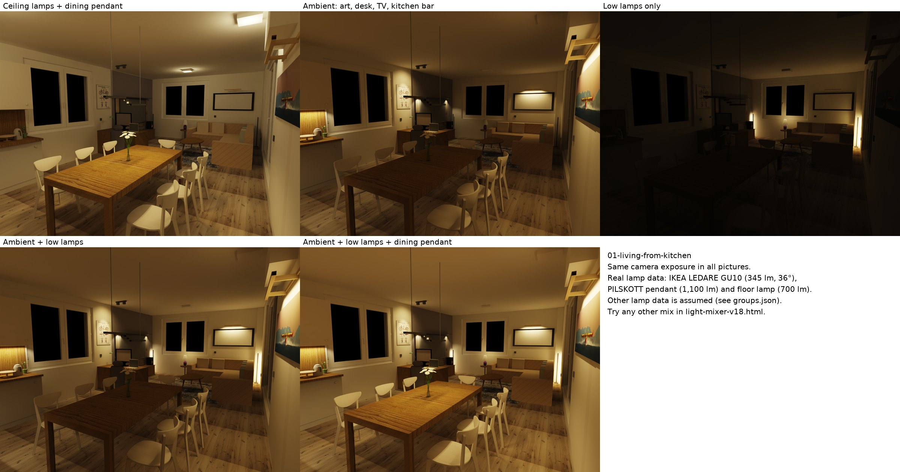

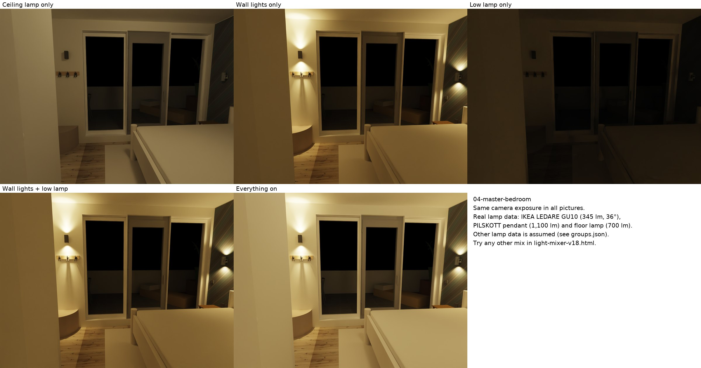

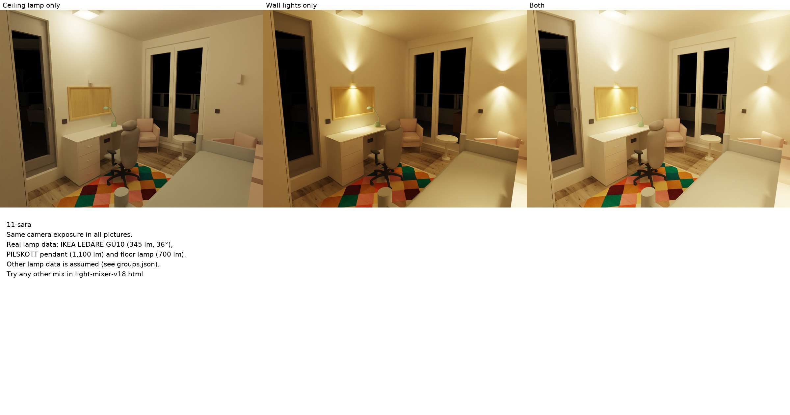

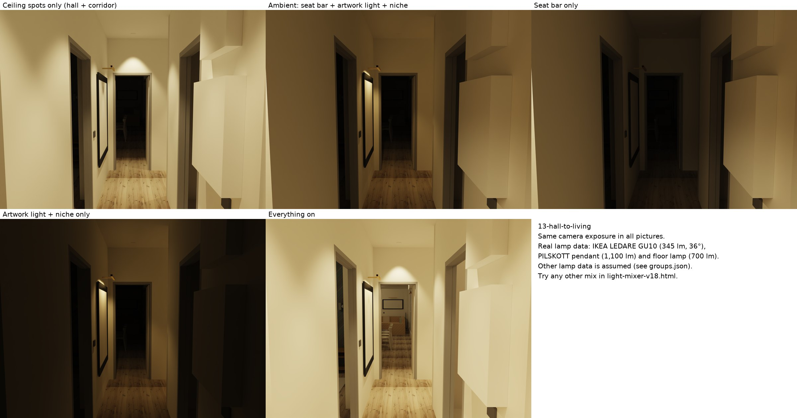

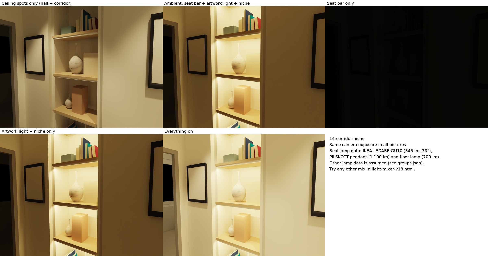

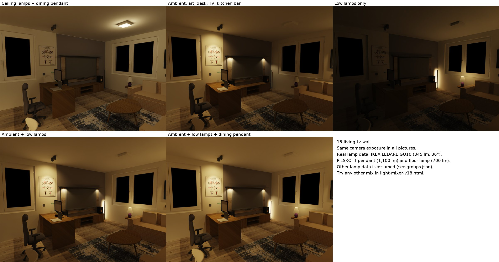

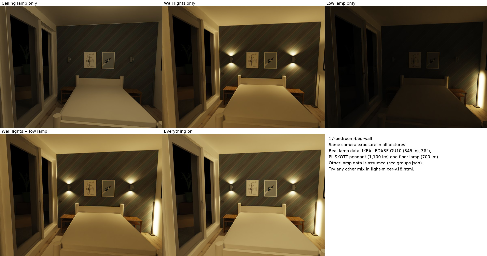

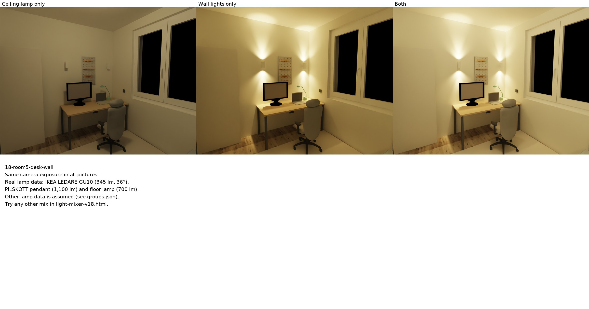

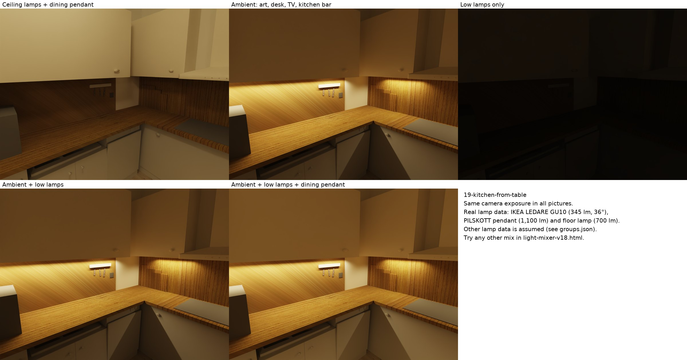

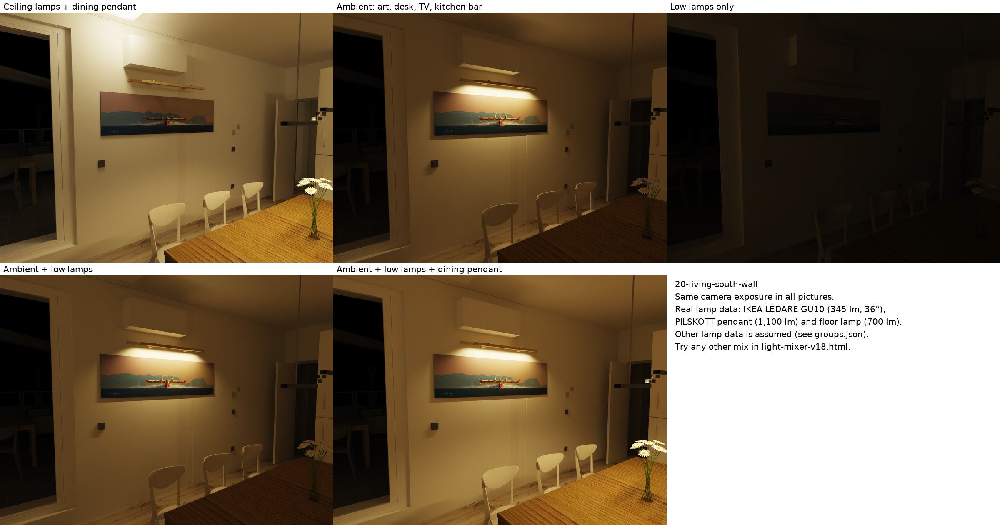

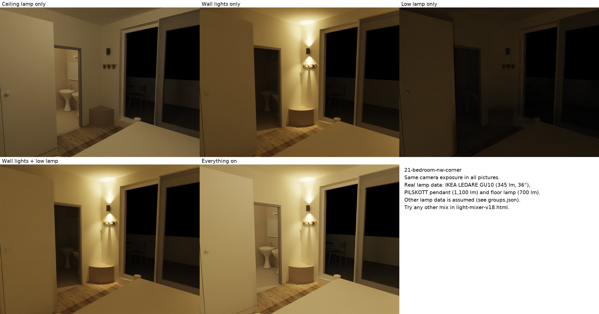

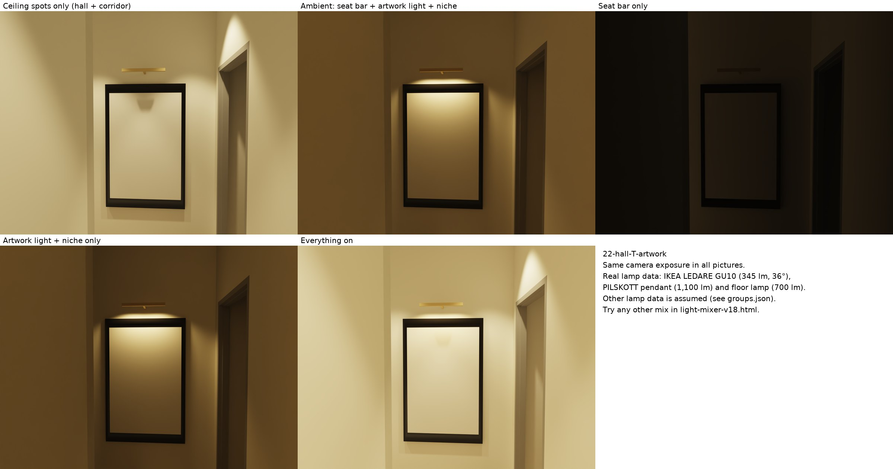

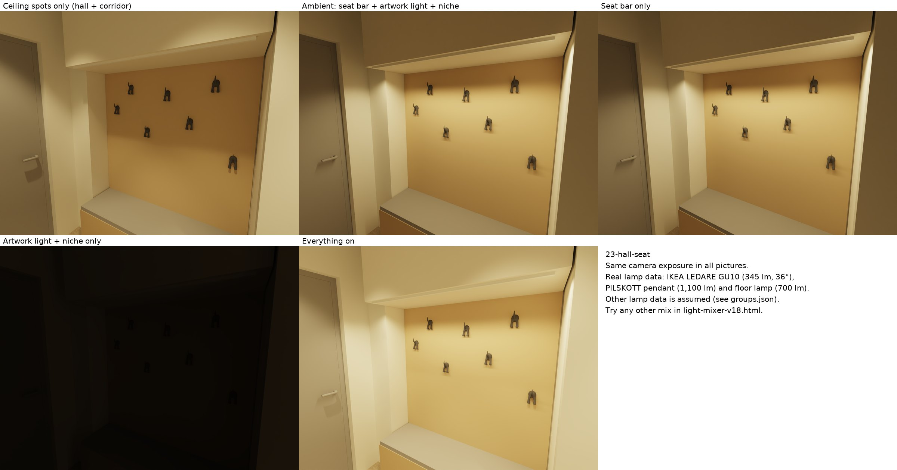

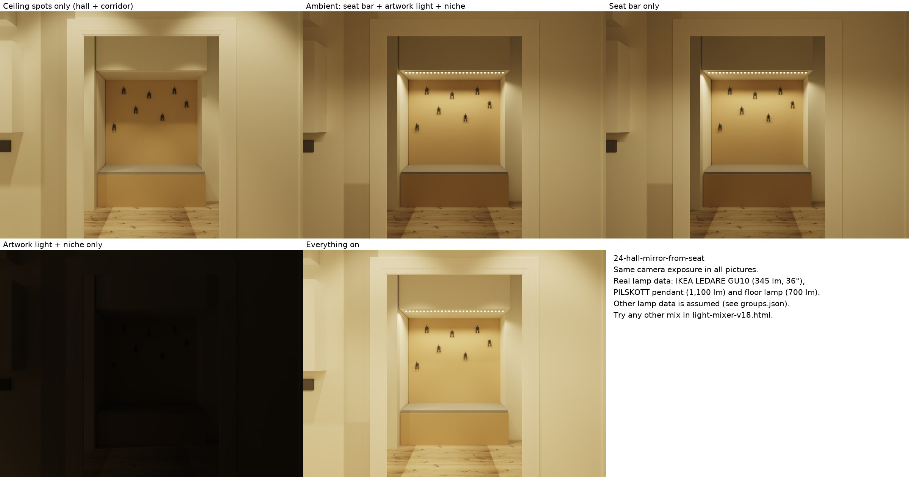
How it is made
The flat is modelled in Sweet Home 3D, which stays the only source of truth. A script exports the model, places every lamp in Blender with its lumens, colour temperature and beam angle, and renders each preset with Cycles. Nothing in Blender is edited by hand, so a change in the model is one rebuild away from new pictures.
The scripts, the model and the full work journal are in the GitHub repository.